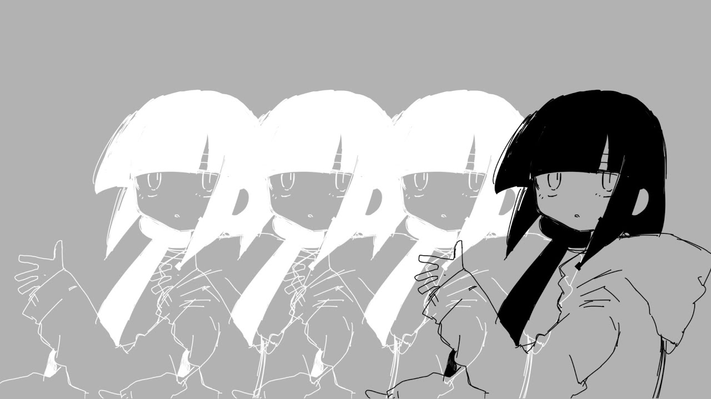
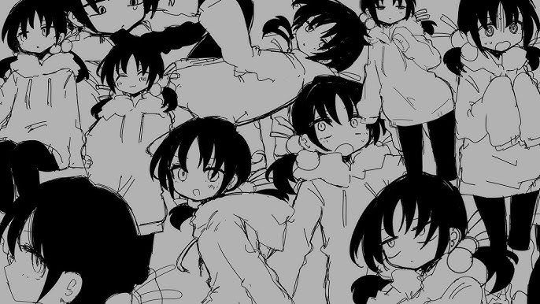

Zdecydowanie zasłużone 1 miejsce. Jest to świetnie skomponowany utwór z bardzo dobrym tekstem.
Jest to na pewno jedna z moich ulubionych piosenek ogólnie.

Lost Umbrella
Ilość wyświetleń: 83mln
Data wydania: 27 Luty 2018
Jeszcze na początku tego roku ta piosenka była top 1, lecz teraz jest na drugi.
Według mnie jest to naprawdę fajny utwór. Ciekawostka: istnieje piosenka która
jest zremixowaną wersją utworu, bez podania źródła, a do tego stała się ona
popularna na TikToku przez co ma więcej wyświetleń niż oryginał. Zasłużona
popularność została skradziona.
Loneliness of Spring
Ilość wyświetleń: 10mln
Data wydania: 13 Maj 2021
Nigdy nie słuchałem więc się nie wypowiem, poza tym że widać ogromny spadek wyświetleń.
Relayouter
Ilość wyświetleń: 9,6mln
Data wydania: 8 Sierpnia 2023
Kolejne arcydzieło, bardzo fajny vibe ma. Tekst zależy mocno od interpretacji
bo czasami wydaje się bez znaczenia konkretnego.

Rainy Boots
Ilość wyświetleń: 8,7mln
Data wydania: 23 Czerwca 2021
Jedna z lepszych według mnie piosenek. Co tu dużo mówić, po prostu fajna jest.